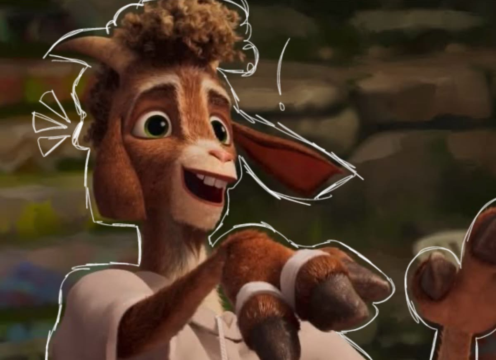
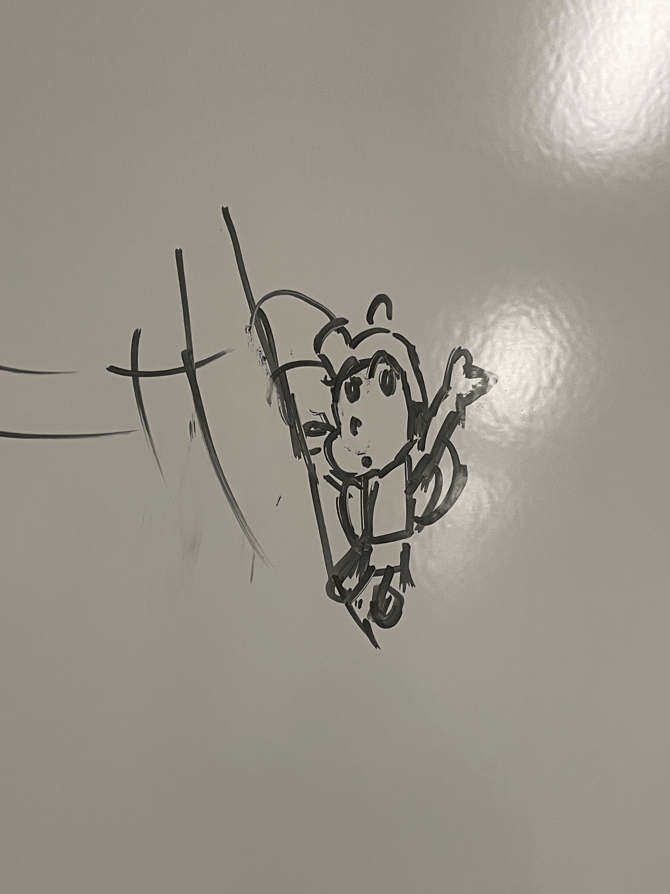
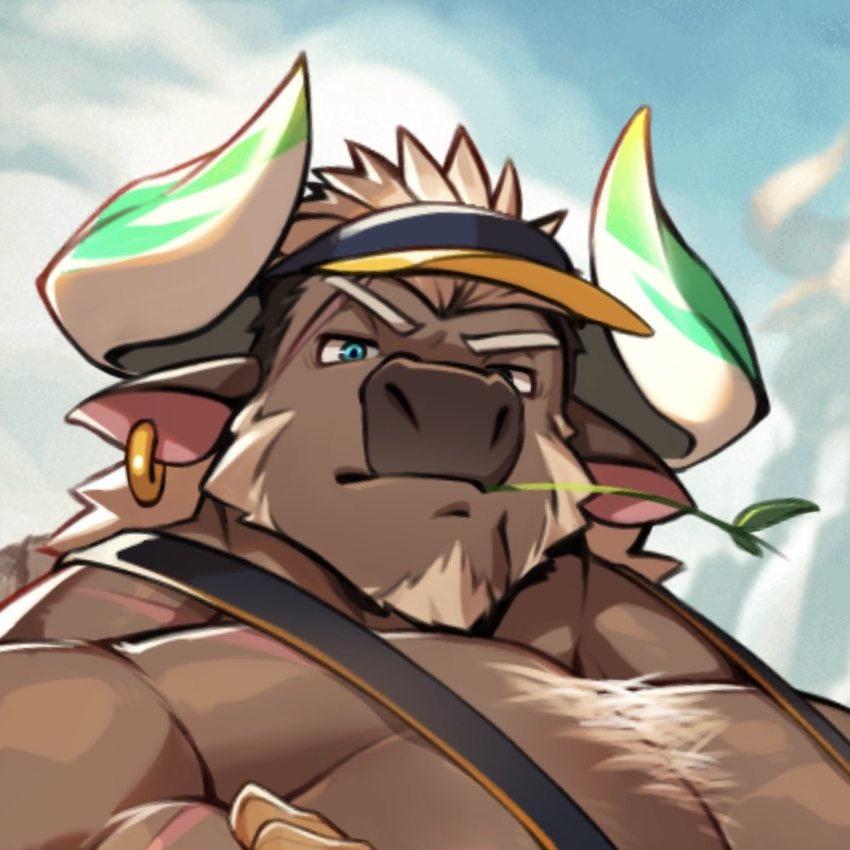
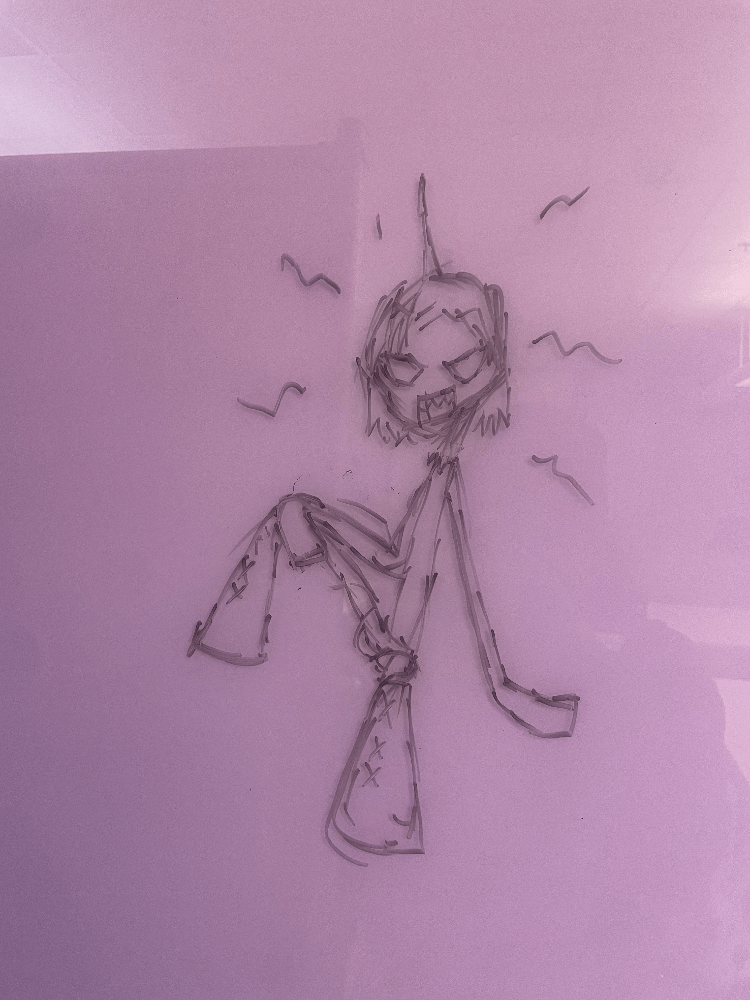

Magda, the Magicks Planet, is the first planet from the BOU-085 Star. Madga boasts a variety of biomes that is home to the most species-diverse population of the entire Star System.

Beastfolk come in all sorts of types. Will is a pygmy goat Beastfolk, and he plays a professional basketball-like sport.

Flying creatures, the Fairies and Pixies, are usually smaller than a human. Lieselotte is a Color Pixie with watercolor paint-like powers.

The sapient creatures of BOU-085 are omnivorous and distinct from Earth's animals. Dallawan is a bull Beastfolk who owns and operates a dairy farm.

Noisers usually live in Pokon, but some of them reside in Magda's humid biomes. Duffy is a Noiser who often travels to Magda for music festivals.